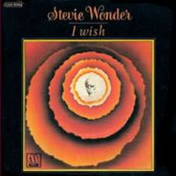
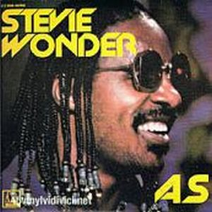
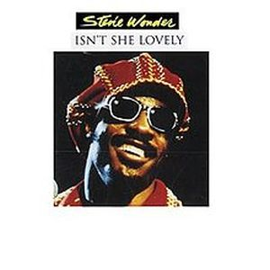

En un primer momento el disco se iba a llamar "Let's see life the way it is", pero al final optó por su nombre definitivo,
"Songs in the key of life". Doble álbum con EP extra lanzado en septiembre de 1976, con una ambición ilimitada y lleno de canciones diferentes pero a la vez grandiosas. Algunos de los tantos géneros que incluye Stevie Wonder en esta obra maestra de la historia musical popular son R&B, Pop, Funk, Afrobeat, Soul, Instrumental, jazz, orquestral y experimental. Temazos como "I Wish", "Sir Duke", "Isn't She Lovely"..., no hay canción que no merezca un calificativo sobresaliente.
Son temas que una y otra vez han sido versionados por artistas tan distintos como el "Pastime Paradise" por Coolio -"Gangsta's paradise" fue uno de los hits más oidos en los 90`s- y por Patti Smith en el 2007. "Love's in Need of Love Today”, que sirvió para el Tributo a los Héroes del 11 de septiembre del 2001, posteriormente cantada por Dave Hollister en el 2002, y por Joan Osborne. "I Wish" se utilizó para la película "Wild Wild West" en la versión de Will Smith. "Knocks me Off My Feet" fue grabada por Luther Vandross en el 96 y por Donell Jones en el mismo año. "if it's magic" por Sarah Connor en el 2007. "As" en un dueto por Mary J. Blyge y George Michael..., la lista sería casi interminable.
El disco debutó en el número 1 de las listas USA y allí se mantuvo durante 14 semanas seguidas. Cosechó 4
Grammys, entre ellos a la mejor producción, mejor disco y mejor cantante de R&B. El desparrame creativo lo dejó seco por 3 años, pero la huella ahí quedó. Elogios de críticos, público y artistas como Kanye West que dijo en el 2005 de su propio trabajo;
“no estoy intentando competir con lo que se hace ahora. Realmente estoy intentando competir con Innervisions y Songs in the Key of Life”.
El álbum forma parte de la Biblioteca estadounidense del Congreso donde se conservan los acontecimientos de audio que son cultural, histórica o estéticamente importantes, disco de Diamante y no son pocas las alabanzas que se puede decir de un disco donde blancos o negros, amantes del soul, del pop, jazz o rock encontrarán un conjunto de extraordinarias canciones llenas de positividad, de amor, reinvindicativas,... para todos los gustos y estilos; con la esencia pura de este gran hombre que acaparará los 70 como suyos. Este álbum marca el final de un cuarteto de discos que ayudaron a determinar la forma de la música popular para la década próxima.
Classic albums; Songs In The Key...
Songs in the Key of Life An All Star (Grammy Salute 2015) with Beyoncé, Ed Sheeran...


